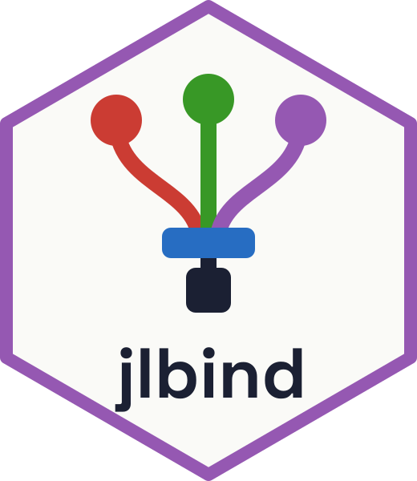
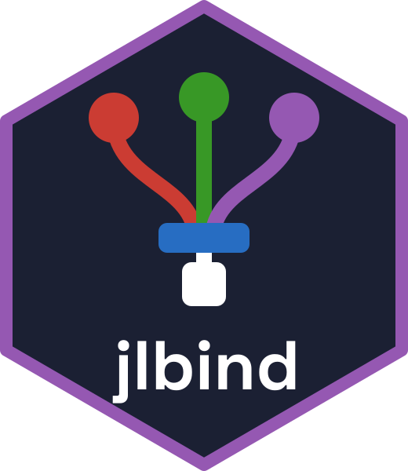

Using packages built on jlbind
Source: vignettes/using-clients.qmd
jlbind lets R packages call Julia code compiled ahead of time into a shared library, without a Julia session. This vignette explains how that library works and how to use an R package built with jlbind. To add Julia functions to your own R package, see Get started with jlbind and Technical details. For how jlbind compares with other ways of calling Julia from R, see Performance.
How it works
An R process can load only one compiled Julia library. Julia has one runtime per process, and that runtime uses a single compiled image. If two R packages loaded separate copies of the library, they could conflict and crash the R session.
To avoid this, jlbind builds one shared library for each user, combining the Julia code of all installed R packages that use jlbind (clients). When you run install_library(), jlbind finds the installed clients, compiles their binding packages into one library, and saves it under tools::R_user_dir("jlbind", "data"). Loading a client loads that library and connects the client to it.
A client can only be bound to a library built from the version of that client currently installed. If you update a package without rebuilding the library, its functions will report that the library needs to be rebuilt.
Using a package built on jlbind
You need Julia 1.13 or later to build the shared library.
After installing or updating an R package that uses jlbind, run:
jlbind::install_library()The first build downloads and compiles the required Julia dependencies, so it may take a few minutes.
Julia cannot be restarted within an R session. If the old library has already been loaded, rebuilding it on disk does not replace the copy in memory. Restart R to use the new library.
If something doesn’t work correctly
If a package that uses jlbind doesn’t work, first check its status:
jlbind::check_bound("somepkg")The most common causes are that the shared library hasn’t been built yet, or that the package was updated after the last build. For a full report, run:
jlbind::jlbind_sitrep()It shows the Julia that install_library() would use (with its version, and whether it came from JULIA or the PATH), the library and what it was built from, each installed package that uses jlbind and whether the library is current for it, and the thread count. It works whether or not a library has loaded, and returns the same information invisibly as a list.
If the Julia installation used for the build has been removed or replaced, for example by a juliaup update, rebuild the library. install_library() rebuilds it when the Julia version differs from the one it was built with. If the version is the same, use force = TRUE:
jlbind::install_library(force = TRUE)You can select the Julia installation to use by setting the JULIA environment variable or by passing julia = to install_library().
The library is compiled for the building machine’s CPU, and jlbind won’t load it on another. If one R library is used from computers with different CPUs, see Build options.
Threads
Julia runs with one thread by default. To use multiple threads, set JULIA_NUM_THREADS before loading the first package that uses jlbind, for example in your .Renviron file:
JULIA_NUM_THREADS=auto # or a number, such as 4The thread count is fixed when the library is loaded, so restart R after changing it.
Dependency versions
All clients share a single set of Julia dependencies. By default, the build starts from the versions in the Manifest.toml of the first client that has one, and keeps them for the other clients where their [compat] bounds allow. Pass versions = "compat" to ignore the manifests and let Julia’s resolver choose versions from the clients’ [compat] bounds alone.
If a client’s [compat] bounds conflict with those of the clients listed before it by jlbind_clients(), it is left out of the build; check_bound() says which clients it conflicts with.
You can control which clients are included by specifying them explicitly:
jlbind::install_library(packages = c("pkgA", "pkgC"))If you need both clients but never need them in the same R session, build a separate library for each. Set JLBIND_LIBRARY before loading the client to select the library for that session.
For example, build the two libraries:
jlbind::build_library("pkgA", "~/jlbind/pkgA")
jlbind::build_library("pkgB", "~/jlbind/pkgB")Then select one in an R session:
# jlbind.dll on Windows, jlbind.dylib on macOS
Sys.setenv(JLBIND_LIBRARY = "~/jlbind/pkgA/jlbind.so")
library(pkgA)Build options
jlbind compiles the library with these options, which keep it small and fast. Most users don’t need to change them.
| Option | What it does | How to change it |
|---|---|---|
--output-lib |
Builds a shared library | Fixed |
--compile-ccallable |
Exports the clients’ functions | Fixed |
--trim=safe |
Removes code that can’t be reached | One client setting Config/jlbind/trim: false turns it off for the whole library, which makes it much larger |
--cpu-target=native |
Compiles for this computer’s CPU |
cpu_target or JULIA_CPU_TARGET
|
-g0 |
Leaves out debug info |
julia_args or JLBIND_JULIA_ARGS
|
When trimming, JuliaC also passes --experimental, --strip-ir and --strip-metadata.
CPU target
Use cpu_target if one R library is used from computers with different CPUs, such as cluster nodes sharing a home directory:
jlbind::install_library(cpu_target = "generic")This table compares the options on an x86-64 Linux computer (AMD Zen 4) with Julia 1.14. Library size is the compiled library file for CausalStructures.jl, a package of graph algorithms; the Julia runtime it loads adds about 6 MB. Run times are relative to "native", so 2× takes twice as long. Graph code is CausalStructures.jl, and the other columns are small numeric kernels. Results will differ for other packages and computers. The benchmark code is in the jlbind repository.
cpu_target |
Runs on | Library size | Graph code | SIMD loops |
exp/sin
|
|---|---|---|---|---|---|
"native" (default) |
This CPU model | 8.9 MB | 1× | 1× | 1× |
"generic" |
Any CPU | 8.8 MB | 1× | 1.7–2.8× | 1.1× |
| Several targets | The CPUs you list | 21 MB | 1.0–1.1× | 1.0–1.1× | 0.9× |
"generic;native,clone_all" |
This CPU model | 13.7 MB | 1× | 1× | 2.1× |
Sorting and a scalar ODE solver took about the same time with all of them.
The several targets measured here are those of Julia’s own system image, which keep numeric code fast across x86-64 CPUs:
jlbind::install_library(
cpu_target = paste(
"generic",
"sandybridge,-xsaveopt,clone_all",
"haswell,-rdrnd,base(1)",
"x86-64-v4,-rdrnd,base(1)",
sep = ";"
)
)Build options count towards whether the library is up to date, so calling install_library() without them rebuilds the library with the defaults. To keep a target for every build, set JULIA_CPU_TARGET, for example in your .Renviron file:
JULIA_CPU_TARGET=genericJulia arguments
For advanced use, julia_args passes extra options to Julia when it compiles the library, such as "-O3", or "-g1" to keep the debug info that jlbind removes with -g0. You can also set them in JLBIND_JULIA_ARGS, separated by spaces. They can’t change the options jlbind relies on: --trim, --output-* and --compile-ccallable.
Libraries for people without Julia
The library loads the runtime of the Julia that built it, so that Julia must stay installed. With bundle = TRUE, jlbind copies Julia’s runtime next to the library, using JuliaC’s --bundle, so that it runs without Julia:
jlbind::build_library(
c("pkgA", "pkgB"),
"~/jlbind/bundle",
cpu_target = "generic",
bundle = TRUE
)Give them the whole directory, built on the same operating system and CPU architecture as theirs. Then they should set JLBIND_LIBRARY to the library in it before loading them.
The size depends on how much of the runtime you keep. Julia’s whole runtime includes libraries that many packages never use, such as OpenBLAS. These sizes are for the whole directory, with cpu_target = "generic" on the computer above, for CausalStructures.jl and for a tiny package:
| Library | CausalStructures.jl | Tiny package |
|---|---|---|
| Not bundled (needs Julia) | 8.8 MB | 2.0 MB |
| Bundled | 87 MB | 68 MB |
| Bundled and removed by hand | 15 MB | 8.9 MB |
To get the last row, delete jlbind-bundle/share, and everything in jlbind-bundle/lib and jlbind-bundle/lib/julia except libjulia, libjulia-internal, libunwind, libz, libzstd, libatomic, libgcc_s and libopenlibm, then run strip on the library. jlbind doesn’t do this for you, because a package can need more of them; one using LinearAlgebra needs OpenBLAS, for example. Test every package after removing anything.